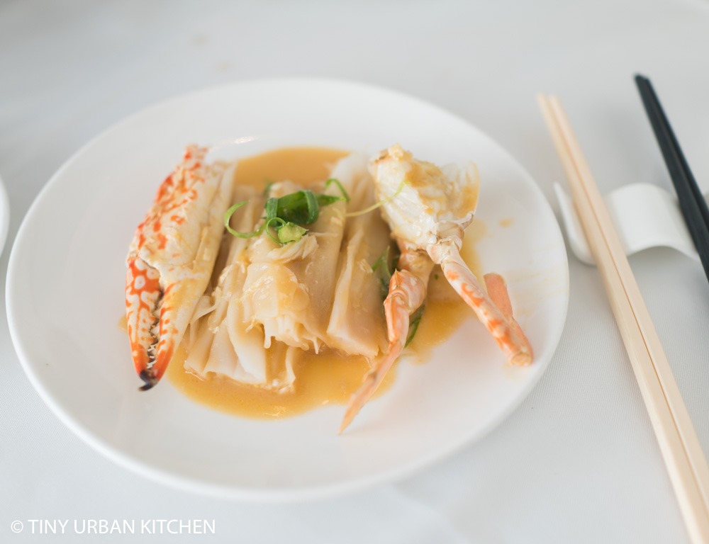
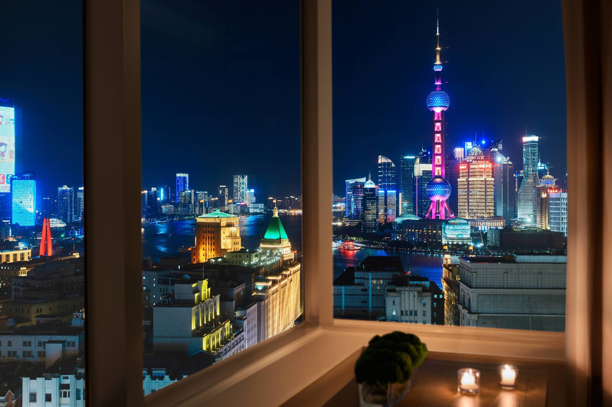
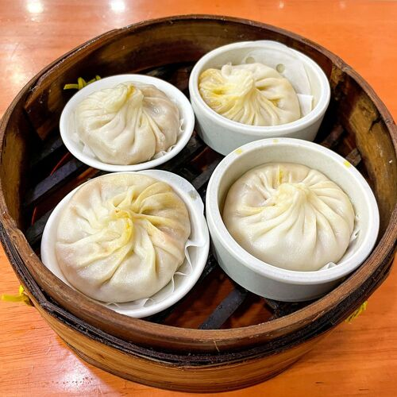
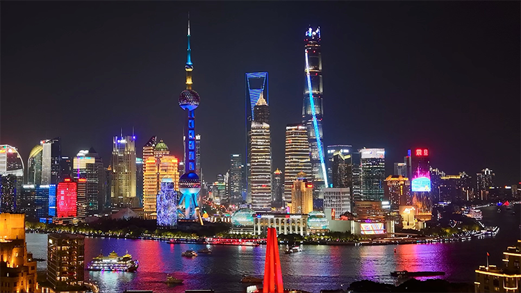
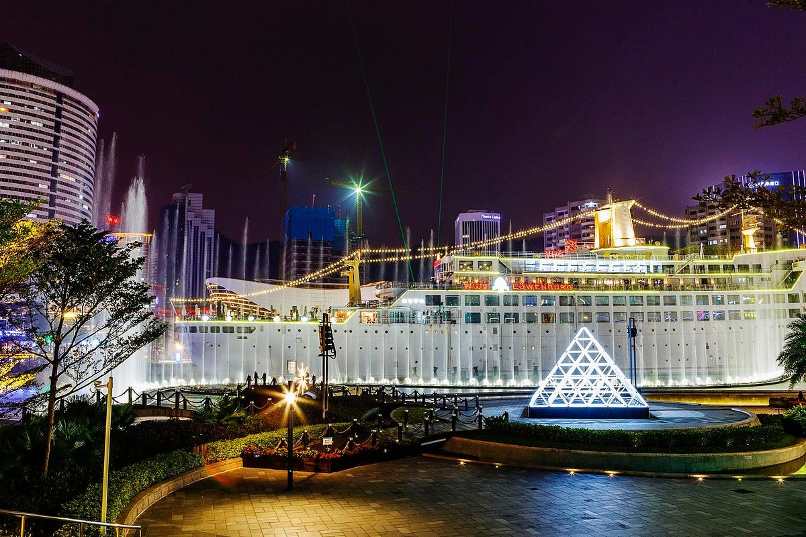
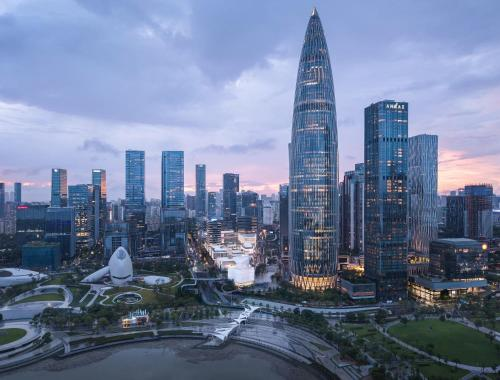

A curated guide to the best tables on the trip — world-ranked fine dining, legendary neighbourhood institutions, and everything in between.
In March 2026, The Chairman reclaimed its throne as Asia's Best Restaurant. Chef Danny Yip's quietly revolutionary approach rebuilds Cantonese classics from the ground up — no fusion flourishes, no technique for its own sake. Just obsessive sourcing, generational respect for ingredients, and a kitchen that believes the best cooking is almost invisible.
The restaurant is intimate — just 18 tables in a handsome Heritage building. Dress well, book far in advance, and let the kitchen lead.


Perched on the 29th floor of The Shanghai EDITION, ROOF is where Shanghai gathers as the sun drops. Panoramic windows frame the exact moment the Pudong skyline ignites — Oriental Pearl, Shanghai Tower, the whole electric circus. The cocktail program is serious (expect theatrical punches, aged spirits, impeccable technique), the vibe effortlessly chic. Arrive just before sunset to secure a window table.
Perfect for: arriving-night drinks, celebratory toasts, or a nightcap after Nanjing Road. One of the finest rooftop experiences in Asia.

Three decades of perfecting one thing. Qiao Ai Lai Lai has no ambitions to be anything other than the best xiaolongbao in Shanghai — and many argue it has achieved exactly that. The tiny dining room is perpetually full, the queue legendary. But every person in that line will tell you the same thing: it is worth it.
The crab roe xiaolongbao — bursting with rich crab roe in a gossamer-thin wrapper — is arguably the finest soup dumpling on the planet. Come hungry. Come early. Come prepared to wait.

Shanghai's most atmospheric dining neighbourhood — 1920s Shikumen townhouses converted into excellent restaurants, bars and cafés. The setting is genuinely beautiful: lantern-lit alleys, restored stone archways, warm lighting. Perfect for a family group dinner when everyone wants something different.
Recommendations within Xintiandi: Sir Stanley's for elevated Shanghainese, Kommune for vibrant social dining, Azul for Spanish tapas with a view. Or wander freely — every doorway is worth exploring.

Sea World Shekou is the social heart of Shenzhen — a vast waterfront complex anchored by the Minghua Ship, permanently moored and converted into a dining and entertainment destination. The plaza comes alive at night with hundreds of restaurants and bars spilling onto the waterfront promenade. A wonderful place for a relaxed family dinner with bay views.
Highlights: Pizzeria Alla Torre (authentic wood-fired Italian with a stunning terrace), premium Chinese seafood (point-and-choose live tanks), Korean BBQ, Japanese izakaya, and the lively deck bars around the Minghua Ship.

Shenzhen's most sophisticated waterfront development — a stunning mix of parkland, public art, dining, and entertainment built around a 120,000 sqm harbour. The Bay Glory Ferris Wheel (the third tallest in China) provides a spectacular backdrop, and the lakeside promenade is lined with excellent restaurants and cafés. Perfect for a leisurely dinner as the sun goes down.
Try: The Anpha Seafood Restaurant for premium Cantonese, or grab a table at one of the many Western restaurants overlooking the water. The atmosphere here is unlike anywhere else in Shenzhen.